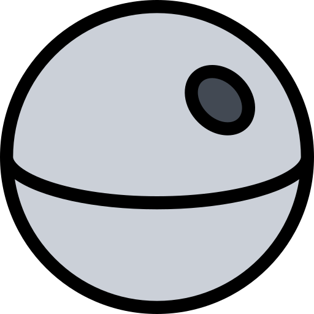

<nz-layout class="app-layout">
  <nz-sider class="menu-sidebar"
            nzCollapsible
            nzWidth="256px"
            nzBreakpoint="md"
            [(nzCollapsed)]="isCollapsed"
            [nzTrigger]="null">
    <div class="sidebar-logo">
      <a href="#" target="_blank">
        
        <h1>Star Wars Database</h1>
      </a>
    </div>
    <ul nz-menu nzTheme="dark" nzMode="inline" [nzInlineCollapsed]="isCollapsed">
      <li nz-submenu nzOpen nzTitle="Dashboard" nzIcon="dashboard">
        <ul>
          <li nz-menu-item nzMatchRouter>
            <a routerLink="/welcome"><i nz-icon nzType="star" nzTheme="outline"></i>Home</a>
          </li>
          <li nz-menu-item nzMatchRouter>
            <a><i nz-icon nzType="video-camera" nzTheme="outline"></i>Films</a>
          </li>
          <li nz-menu-item nzMatchRouter>
            <a><i nz-icon nzType="user" nzTheme="outline"></i>People</a>
          </li>
          <li nz-menu-item nzMatchRouter>
            <a routerLink="/planets"><i nz-icon nzType="global" nzTheme="outline"></i>Planets</a>
          </li>
          <li nz-menu-item nzMatchRouter>
            <a><i nz-icon nzType="qq" nzTheme="outline"></i>Species</a>
          </li>
          <li nz-menu-item nzMatchRouter>
            <a><i nz-icon nzType="rocket" nzTheme="outline"></i>Starships</a>
          </li>
          <li nz-menu-item nzMatchRouter>
            <a><i nz-icon nzType="car" nzTheme="outline"></i>Vehicles</a>
          </li>
        </ul>
      </li>
    </ul>
  </nz-sider>
  <nz-layout>
    <nz-header>
      <div class="app-header">
        <span class="header-trigger" (click)="isCollapsed = !isCollapsed">
            <i class="trigger"
               nz-icon
               [nzType]="isCollapsed ? 'menu-unfold' : 'menu-fold'"
            ></i>
        </span>
      </div>
    </nz-header>
    <nz-content>
      <div style="overflow: auto;" class="inner-content">
        <router-outlet></router-outlet>
      </div>
    </nz-content>
  </nz-layout>
</nz-layout>
